模式與競技
你可以用房間與朋友對弈、練習 AI 戰術，或透過 Ranked 參與一局定勝負的積分對戰。
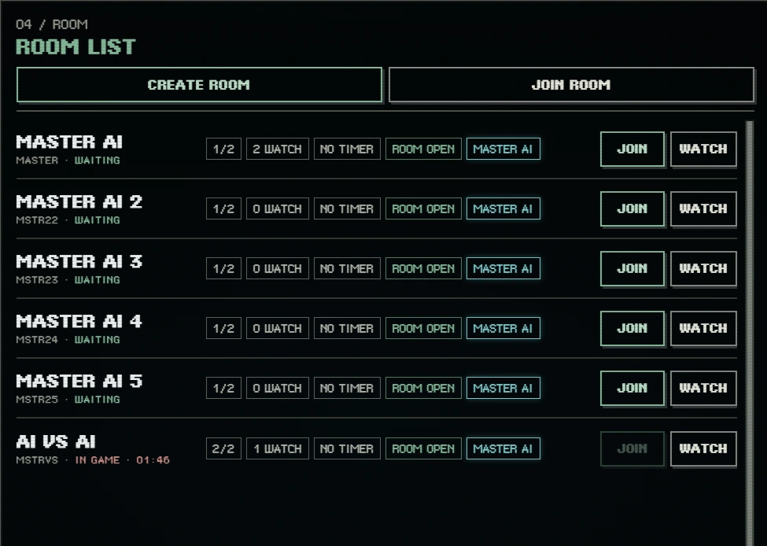
主要遊戲模式
自訂房間
建立房間、分享房間代碼與邀請連結，最多四位玩家同場對弈，另可安排觀戰。
AI 對戰
與電腦對手交手，練習白邊連通、封閉得分與風險判斷；遊戲提供不同 AI 選項。
積分對戰
進入配對系統，按勝負與對手評分計算 RTG 變動，並參與當季排行。
淘汰賽
依賽事籤表進行對局，逐輪晉級；與 Ranked 的評分配對屬於不同賽制。
一局與三局的差異
| 類型 | 局數 | 說明 |
|---|---|---|
| Ranked | 1 局 | 當局結果直接決定該場對戰結果。 |
| 一般對戰／AI 對戰 | 3 局 | 以三局累積總分結算；雙人總分相同時可為平手。 |
| 淘汰賽 | 3 局 | 依序比較總分、局勝數；仍相同時抽棋決定晉級。 |
一局制不代表使用不同的落子或封閉計分方式；差別在於對戰結果的判定時機。
三局總分與「局勝」標記
三局制會把每局取得的分數累積成整場總分；並不是先贏兩局就直接獲勝。畫面上玩家姓名旁的「局勝」小標記，記錄該玩家已贏下幾局。
在淘汰賽中，單局得分較高者獲得 1 次局勝；該局同分時，雙方都不增加局勝數。局勝數是整場總分相同時的第二順位判定。
淘汰賽三局結束後，如何決定晉級？
- 先比三局累積總分：總分較高者晉級；即使局勝數較少，只要總分較高，仍然獲勝。
- 總分相同，再比局勝數：贏下較多局的玩家晉級。例如同為 30 分，局勝 2 次的玩家勝過局勝 1 次的玩家。
- 總分與局勝數都相同，重新抽棋：雙方從四枚隱藏白邊數的棋子中，各選一枚不同的棋子；四枚棋子分別有 1、2、3、4 條白邊，揭曉後白邊數較多者晉級。逾時未選時，系統會自動代選。
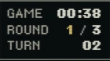
Ranked 與 RTG
Ranked 的評分使用 Elo 系統。新帳號起始評分為 1200 RTG，前 10 場屬於定位期，評分可能較明顯波動。之後仍會依雙方分數與比賽結果調整。
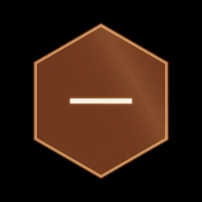
Bronze
< 1100 RTG未完成定位期時暫歸此級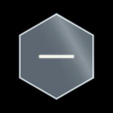
Silver
1100+ RTG完成定位期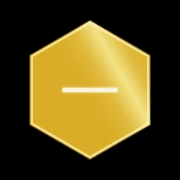
Gold
1200+ RTG完成定位期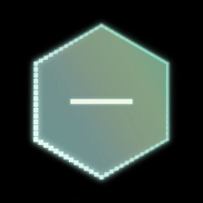
Platinum
1300+ RTG完成定位期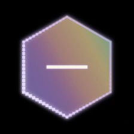
Diamond
1450+ RTG完成定位期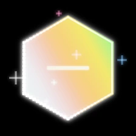
Master
1600+ RTG至少 30 場已完成對戰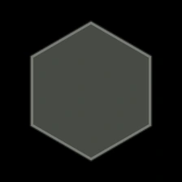
前 10 場的評分狀態，與六個正式階級分開呈現。
輔助功能
- 新手教學：引導初次遊玩的玩家了解棋盤與對戰流程。
- 觀戰：不進入玩家席也能觀看進行中的房間對局。
- 重播：觀看與回顧已保存的對局。
- 色彩實驗室：調整個人棋子顏色、圖案與視覺樣式，跟著教學製作並套用配色。
- 玩家歷史與徽章：在玩家資料中查看賽季及活動相關紀錄。
所有功能是否開放、可用數量與限制可能隨遊戲更新調整。
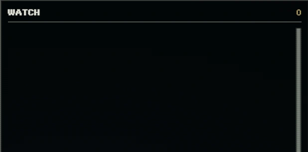
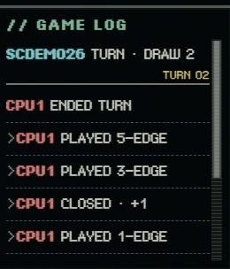
色彩實驗室教學
Color Lab 可以製作棋子的配色與圖案，並在練習棋盤上試看。這些設定改變外觀，遊戲的合法落子、連通與計分規則維持相同。
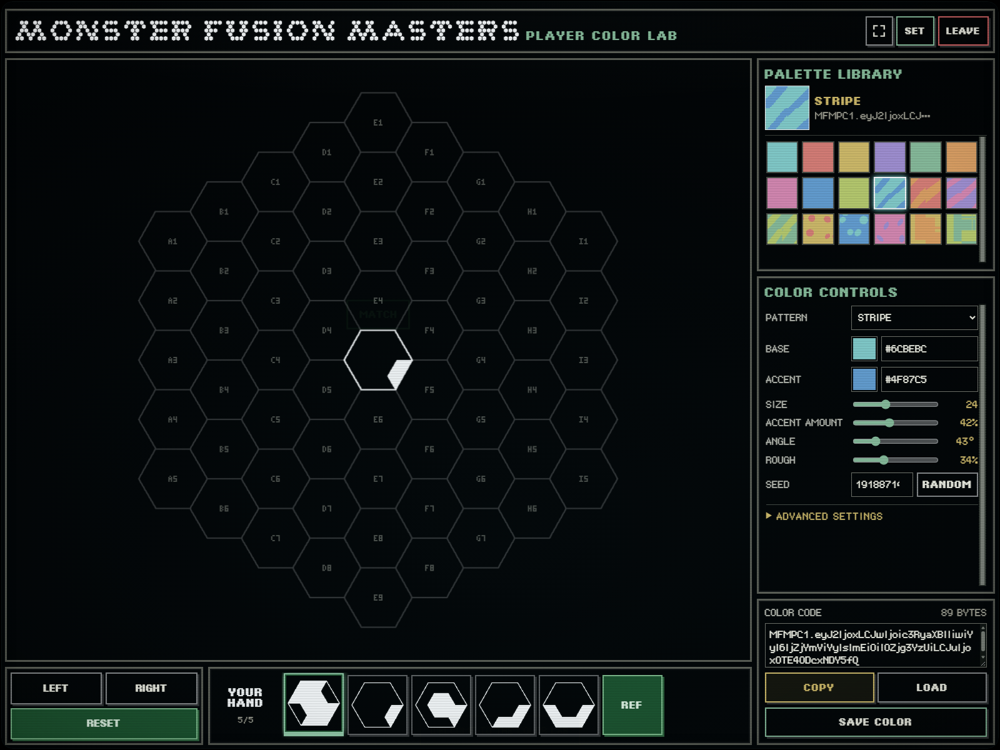
1. 開啟並選擇起始樣式
先以正式帳號登入遊戲，從大廳點選「色彩實驗室（COLOR LAB）」，或在房間新增色彩的視窗點「開啟色彩實驗室（OPEN COLOR LAB）」。也可直接開啟 Color Lab；尚未登入時會返回登入頁。在「色彩庫（PALETTE LIBRARY）」點選一枚官方或已儲存色票，作為編輯起點。
2. 調整顏色與圖案
| 控制項 | 怎麼使用 |
|---|---|
| 樣式（PATTERN） | 選擇純色、條紋、波紋、迷彩等圖案。先選圖案，再微調細節。 |
| 基底／強調色（BASE / ACCENT） | 點顏色方塊，使用色環與中央色塊選色後按「確定（CONFIRM）」；也可輸入 HEX 色碼。純色樣式會停用不需要的強調色、尺寸與比例。 |
| 尺寸／強調比例／角度／粗糙度（SIZE / ACCENT AMOUNT / ANGLE / ROUGH） | 調整圖案的大小、強調色比例、方向與紋理變化，邊調邊看棋子效果。 |
| 種子／隨機（SEED / RANDOM） | 保留配色、改變紋理分布。喜歡目前的分布時，可記住種子，或直接保留完整色彩代碼。 |
| 進階設定（ADVANCED SETTINGS） | 展開目前圖案的細部參數；可調整項目隨樣式不同。初次使用可先完成基本調整。 |
3. 在棋盤上試看
選取下方手牌，用 LEFT／RIGHT 旋轉棋子，在左側棋盤試看或放置。比較單顆棋子與相鄰棋子的辨識度，再繼續調整配色。REF 可更換測試手牌；RESET 可清空棋盤重新試看。
4. 儲存到 Lab 色彩庫
按「儲存色彩（SAVE COLOR）」，將目前設計加入這個瀏覽環境的 Lab 色彩庫，最多可儲存 64 個自訂色彩。之後點選色票即可繼續編輯；自訂色票可拖曳排序、按右鍵刪除。官方色彩已經在庫中，相同設計不會重複儲存。
5. 複製、分享或載入設計
按「複製（COPY）」取得完整的 MFMPC1... 色彩代碼，貼到文字檔備份或分享給朋友。若瀏覽器無法自動複製，代碼會被選取，可手動複製。要開啟別人的設計，將完整代碼貼入「色彩代碼（COLOR CODE）」，再按「載入（LOAD）」；想保留到 Lab 色彩庫時，還要再按 SAVE COLOR。
6. 在對戰房間套用
- 在 Lab 按 COPY，取得要使用的色彩代碼。
- 以正式帳號登入遊戲並進入房間，在「玩家色彩（PLAYER COLOR）」色票列按 ＋。
- 將代碼貼入「新增玩家色彩（ADD PLAYER COLOR）」視窗，按「新增（ADD）」。
- 點選色票列中新加入的色票，選為本場玩家配色。
常見問題
- 換電腦、換瀏覽器或改用桌面版找不到色彩？色彩庫存於本機瀏覽環境，不會隨帳號自動同步。使用完整代碼搬移；清除網站資料也可能移除本機色彩庫。
- 代碼無法載入？確認貼上的是完整 MFMPC1 代碼，而不是 HEX 色碼、截斷的預覽文字或一張圖片。
- 顯示色彩已存在或色彩庫已滿？已儲存的設計可直接選取；達到上限時，先備份代碼再刪除不需要的自訂色票。
- 編輯後要離開？先儲存或複製代碼。尚未儲存的設計離開時會提示確認。